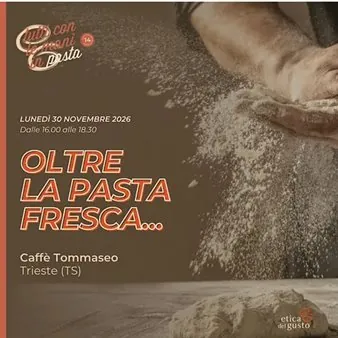

lun 30 nov · dalle 16:00
Tutti con le mani in pasta - Oltre la pasta fresca...
Ogni anno, a novembre, Tutti con le mani in pasta invita i consumatori a entrare nei laboratori dei soci di Etica del Gusto per vivere da vicino l’arte della panificazione, della pasticceria, della gelateria e della cioccolateria artigianale. Un’occasione per conoscere i…
 Indicazioni
Indicazioni
- Costi e prenotazioni
- Costo non indicato · Prenotazione non indicata
- Programma
- Programma da verificare. Apri la fonte ufficiale per orari e possibili aggiornamenti.
- In caso di maltempo
- Nessuna indicazione specifica pubblicata.
- Note
- Acquisito automaticamente dalla fonte.
L’EVENTO
Descrizione completa
Ogni anno, a novembre, Tutti con le mani in pasta invita i consumatori a entrare nei laboratori dei soci di Etica del Gusto per vivere da vicino l’arte della panificazione, della pasticceria, della gelateria e della cioccolateria artigianale. Un’occasione per conoscere i mestieri, le tecniche e la passione e soprattutto il dietro le quinte di come vengono realizzate le creazioni uniche, autentiche e ricche di gusto dei nostri soci. Diventa chef per un giorno al Caffè Tommaseo! Crea tortelli e tagliatelle con Agostino Moretta e gustali con vini selezionati. I partecipanti realizzeranno tre tipologie di piatti: Tagliatelle con intingolo d’anatra, crumble di pane profumato al rosmarino e arancio Tortelli ripieni di zucca violina con burro e salvia Triangoli di pasta croccante con ricotta di mandorle Realizzeranno con le loro mani i tortelli e le tagliatelle, mentre lo chef Agostino preparerà i ripieni e le salse spiegando i procedimenti e gli ingredienti utilizzati. Concluderanno il percorso gustativo assaggiando i prodotti abbinati a dei vini, il tutto in una location d’eccezione! Se le pareti del Caffè Tommaseo potessero parlare, racconterebbero di scrittori, poeti e atmosfere asburgiche dal 1830. Immagina di varcare la soglia del caffè storico più antico di Trieste. Sotto la luce calda che fin dal 1830 illumina queste sale, dove un tempo sedevano Joyce e Svevo, questa volta i riflettori saranno puntati su di te. L’Antico Ristorante Caffè Tommaseo ti apre le sue porte per un’esperienza che va oltre la classica pausa pranzo / cena. Per un pomeriggio, non sarai un semplice ospite seduto al tavolo: sarai il protagonista. Insieme allo Chef Agostino Moretta , vivrai l’emozione unica di mettere letteralmente “le mani in pasta” in un’atmosfera sospesa nel tempo, tra specchiere belghe ottocentesche e un’eleganza sofisticata. Imparerai i segreti della vera pasta fresca, guidato passo dopo passo da chi della cucina ha fatto un’arte. Una volta terminata la preparazione, ti accomoderai al tavolo. Le luci si faranno più morbide, i calici si riempiranno di vino selezionato e, insieme allo Chef, degusterai i frutti del tuo lavoro. Sarà un momento intimo di condivisione e coccole, un’occasione irripetibile per chiacchierare con lo Chef e scoprire i suoi segreti più nascosti, quelli che, durante il consueto sevizio, non potrebbe mai rivelarti.
Iscrizione al seguente link
IL PROGRAMMA
Programma e orari
Appuntamenti raccolti dalle fonti elencate. Dove manca un orario, non è ancora disponibile in questa scheda.
Programma pubblicato
- Dal 2026-11-30 al 2026-11-30
INFORMAZIONI UTILI
Prima di partire
- Controllare la fonte prima di partire.
ORGANIZZAZIONE